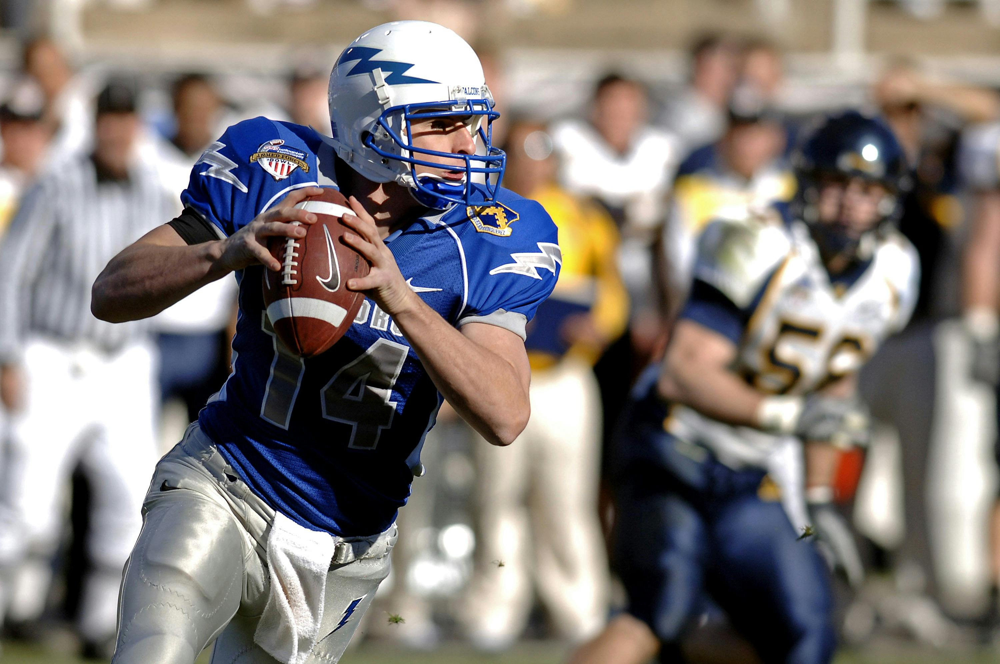
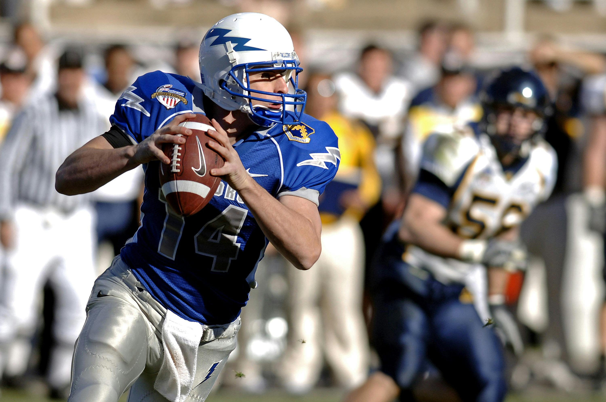
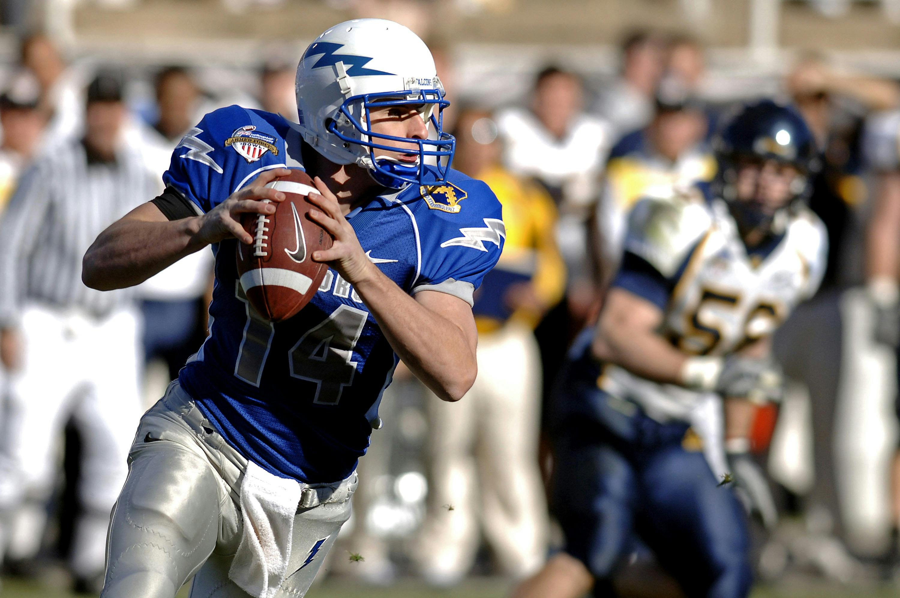
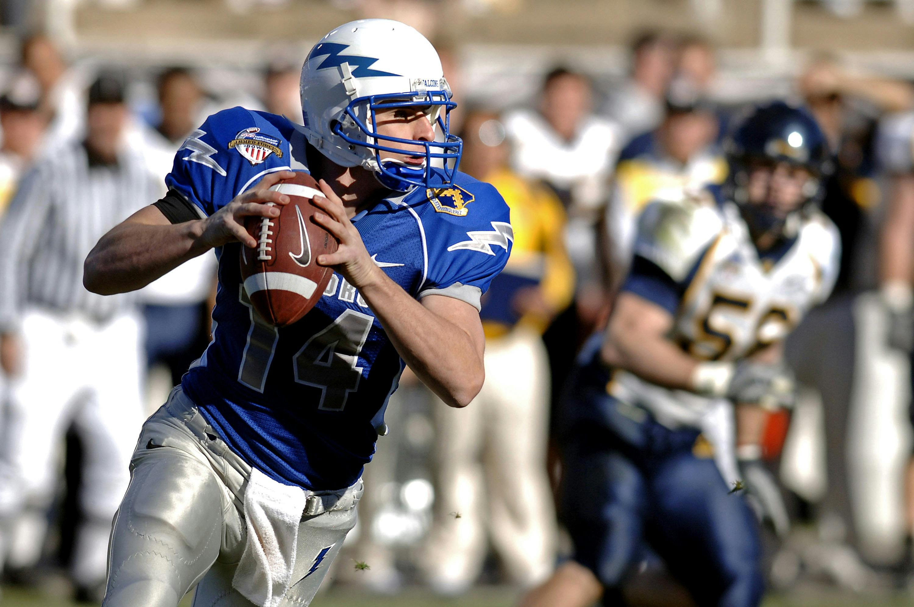

Witness the Brilliance of the NFL:
The National Football League (NFL) is the arena where talent and tactics speak a unified language. The Super Bowl, the grand finale of the NFL, is recognized as one of the brightest sporting events where teams battle for the title of champions.
In American football, each position is a unique dance on the field. From skillful quarterbacks to explosive wide receivers, every player takes the audience on a journey into the world of strategy and skill.
Sport extends from the sidelines to the very summits—creating an atmosphere inspired by passionate fans and rich traditions. Narratives of epic matches and beloved fan traditions enrich the experience.
On the collegiate and university stages, a true epic unfolds. The College Playoff has turned this sport into a cult phenomenon.
Join a world where every move is a strategic play, and every match is a show that leaves unforgettable impressions. American football is not just a game; it's a stylized drama that conquers hearts, turning sports into not just entertainment but also a part of a great cultural heritage.